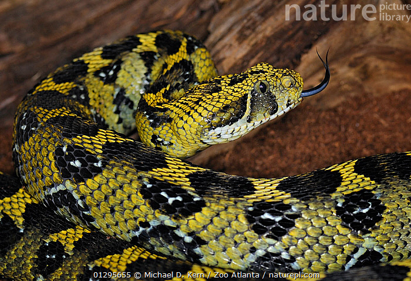
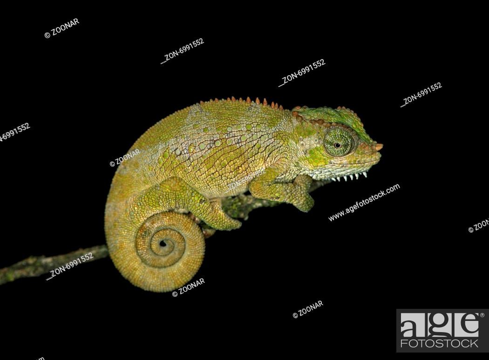
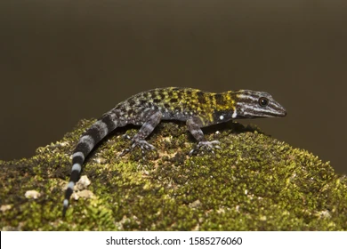
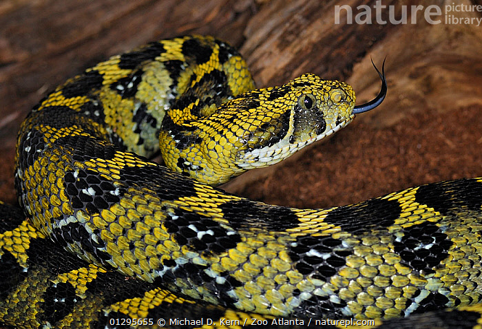
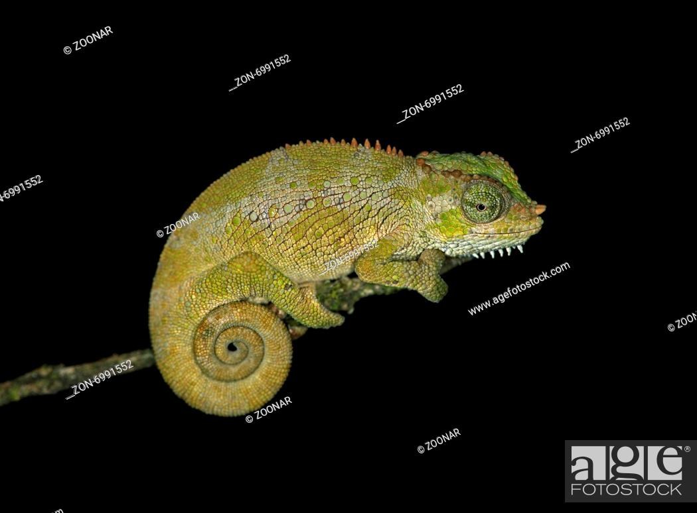
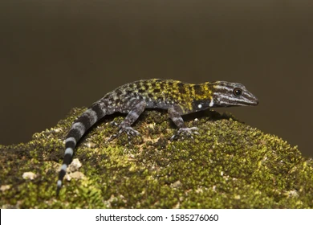

Endemic Reptiles
Ethiopia has a variety of reptiles, including several species that are found only in the country. These include the Ethiopian mountain adder, Bale chameleon, and the Ethiopian dwarf gecko.
  Ethiopia has a variety of reptiles, including several species that are found only in the country. These include the Ethiopian mountain adder, Bale chameleon, and the Ethiopian dwarf gecko.
  